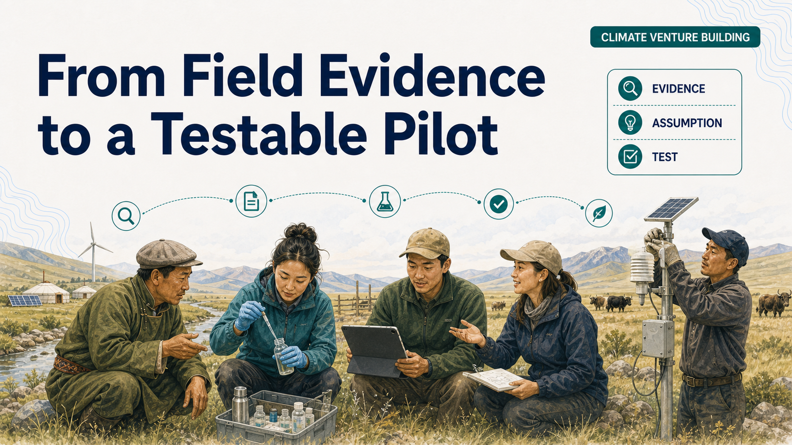
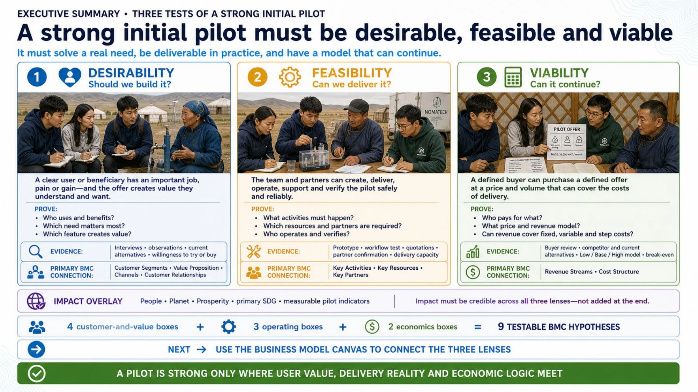
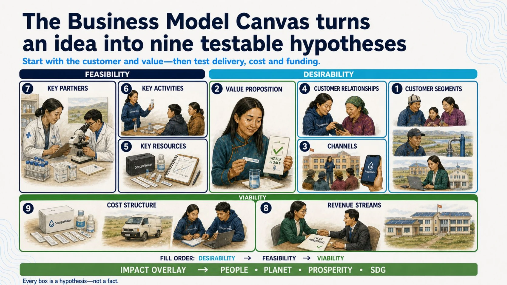
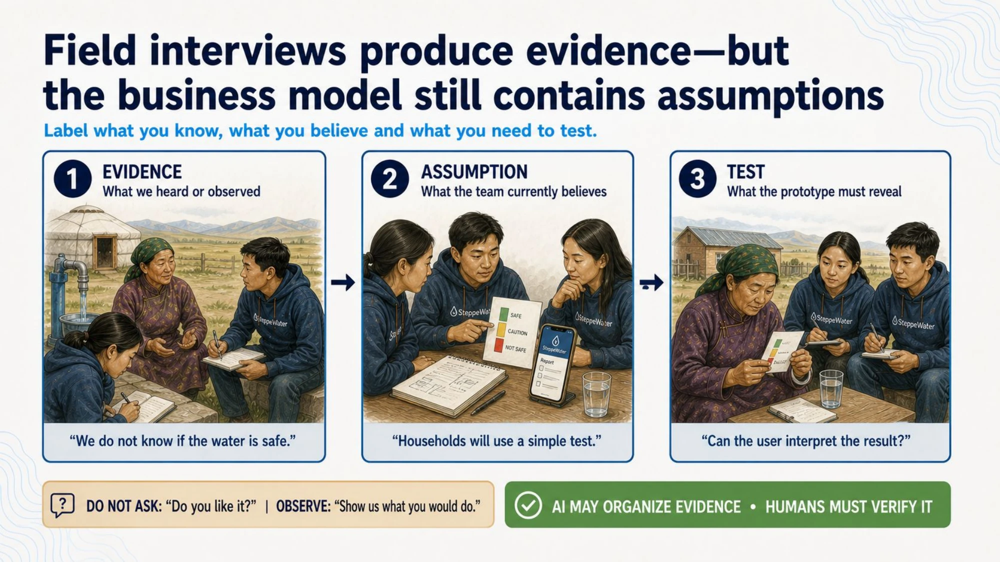
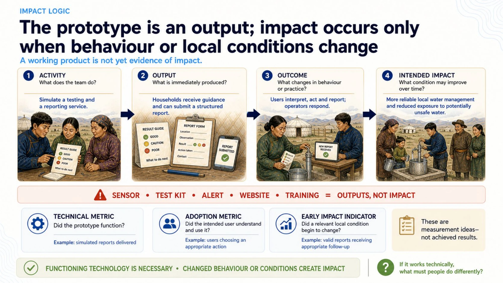
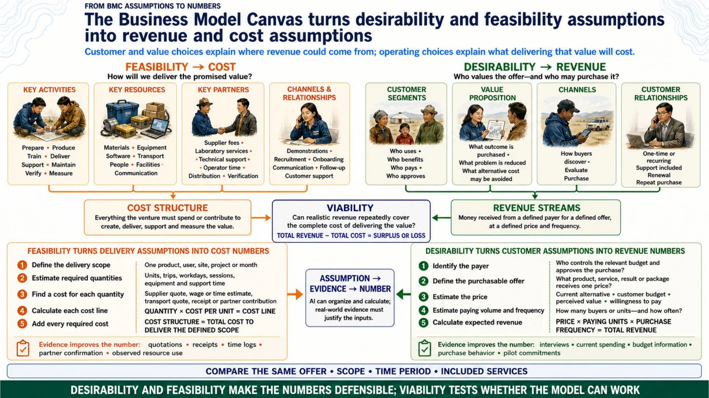
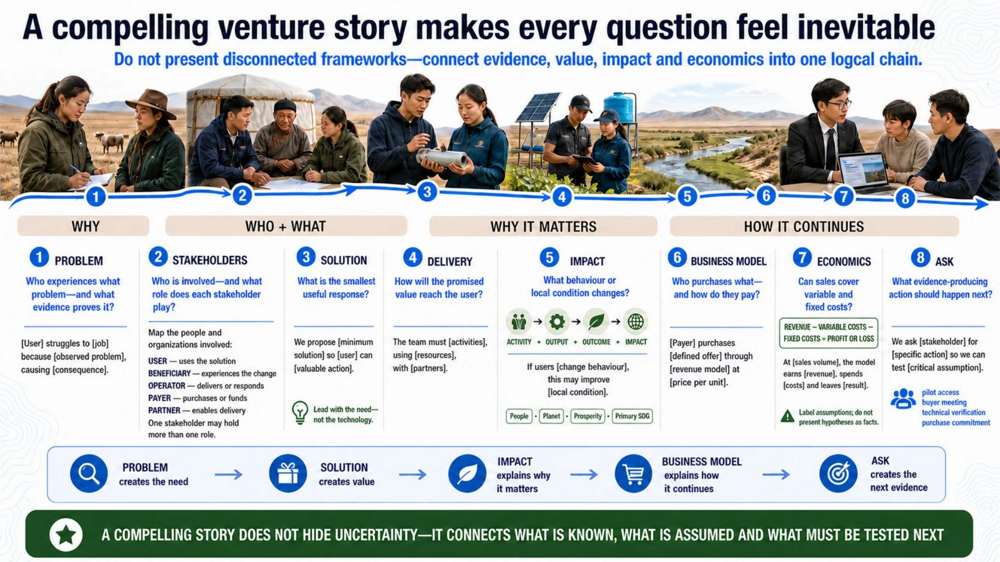
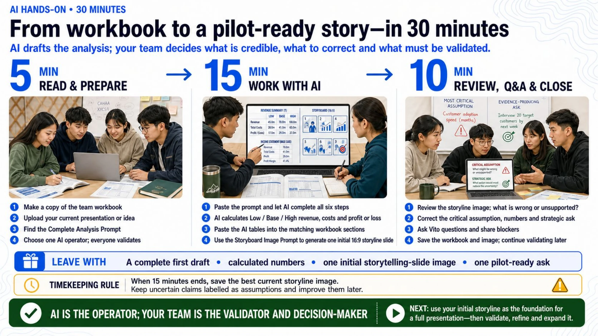

I joined the NomaTech Challenge for COP17 as a speaker and global mentor with a practical assignment: help early-stage teams move from an interesting climate idea to a pilot that somebody could actually test, fund and learn from.
The session was designed around a problem I often see in venture building. Teams can describe the technology they want to create, yet still struggle to explain whose problem it solves, how it will be delivered, what local change it should produce and whether the economics can work. The gap is rarely a lack of passion. It is a lack of connection between the pieces.
NomaTech was developed in the wider context of UNCCD COP17 in Ulaanbaatar, Mongolia. The official conference takes place from 17 to 28 August 2026 under the theme “Restoring Land. Restoring Hope.”1 That context made the mentoring challenge especially relevant. Land, water and climate solutions cannot be judged by a polished prototype alone. They must work for people in a specific place and continue working after the initial demonstration.
A climate idea is not yet a pilot
A strong pilot has to pass three tests at the same time.
It must be desirable. A real user should care enough about the problem to change behaviour, allocate time or pay. It must be feasible. The team should be able to deliver the solution with the technology, partners and operating conditions available. It must also be viable. The revenue logic, cost structure and funding path should support something more durable than a one-off experiment.

Teams often treat these as separate workstreams. Customer interviews sit in one document, the technical design in another and the financial model somewhere else. The better approach is to connect them. A design decision should respond to evidence about a user. A delivery choice should appear in the cost model. An impact claim should link to a behaviour or condition that the pilot can observe.
This is why a narrow pilot can be more valuable than a broad concept. It forces the team to define who will do what, where the test will happen, what resources are required and what result would justify the next step.
Treat the canvas as nine hypotheses
The Business Model Canvas is commonly presented through nine building blocks.2 It can look complete once every box contains text. That appearance can be misleading.
At an early stage, the canvas is not a description of a proven business. It is a map of assumptions.

The customer segment is a hypothesis about who experiences the problem. The value proposition is a hypothesis about what matters enough to change behaviour. Channels are hypotheses about how the team can reach and support users. Revenue and costs are hypotheses about whether value can be captured without breaking delivery.
This change in interpretation matters. Instead of asking whether the canvas looks convincing, the team asks which assumption could make the pilot fail and what evidence would reduce that uncertainty.
It also exposes an important distinction for climate and development ventures. The user, beneficiary and payer may not be the same person. A farmer may use a solution, a household may benefit from it and a local institution may pay. If the team combines those roles into one vague “customer,” the product, channel and pricing logic can become confused.
Separate evidence from assumption
The most useful discipline in the workshop was simple: separate what the team has observed from what it currently believes.

Evidence can come from interviews, observation, field records, previous deployments or credible public data. An assumption is the interpretation placed on that evidence. A test is the next action designed to confirm, reject or refine the assumption.
For example, hearing that households experience unreliable water quality is evidence of a problem. Believing that they will pay a monthly fee for monitoring is an assumption. Offering a limited paid pilot to a defined group is a test.
Keeping these categories separate prevents confidence from growing faster than knowledge. It also makes mentor feedback more useful because the discussion can focus on the weakest link rather than debating the entire idea at once.
Do not confuse an output with impact
A prototype is an output. A dashboard, sensor, device or application may prove that the team can build something. Impact begins only when the solution changes behaviour or improves a local condition.

The session used a simple chain:
Prototype output leads to behaviour change, which leads to a local outcome, which contributes to wider impact.
This is also a better way to connect a venture to the Sustainable Development Goals. The United Nations framework contains 17 goals.3 A team should not begin by selecting the most attractive SDG badge. It should first define the local change and the indicator it can credibly observe. The relevant goal should follow from that logic.
For a water venture, an indicator might be fewer days with unsafe readings, lower treatment downtime or higher adoption of safer practices. For a land restoration venture, it might be survival rates, soil condition or changes in land management. The indicator does not need to prove global impact during a pilot. It needs to show whether the pathway is working.
Turn the canvas into numbers
A credible business model must eventually leave the canvas and enter a financial model.

The customer segment affects the number of potential buyers. The channel affects customer acquisition and support costs. Key activities determine staffing and operating expenses. Partners may reduce capital needs, but they may also take margin or create dependencies. Pricing determines revenue only when it is connected to expected adoption, frequency and retention.
During the session, I used SteppeWater as a composite teaching case. It was created to make the framework concrete and was not presented as a real company. Its role was to show how a team could translate a solution into a small pilot budget, then separate fixed, variable and step costs before making a larger growth claim.
The point was not to produce a perfect forecast. Early-stage numbers will change. The point was to make the assumptions visible enough to test.
A useful pilot model should answer a few basic questions. How many users are included? Who pays? What does each deployment cost? Which costs recur? What changes when the pilot expands to another location? What evidence would support a higher price or lower delivery cost?
Once these questions are explicit, the model becomes a learning tool rather than a fundraising decoration.
Make the venture story feel connected
Teams often have all the right components but present them as separate facts. A compelling venture story creates a logical chain from the problem to the ask.

The problem should explain why action is needed. Evidence should show that the problem is real and specific. The solution should respond to that evidence. The pilot should explain what the team will test. The impact pathway should show what change is expected. The business model should explain how delivery can continue. The ask should fund the next proof point.
When these elements connect, the pitch becomes easier to trust. The audience no longer has to fill the gaps on the team's behalf.
This also improves the quality of the funding request. Instead of asking for capital to “scale,” the team can ask for a defined amount to run a defined test, reach a defined milestone and reduce a defined risk.
Use AI as an operator, not an authority
The hands-on part of the session used AI to help teams analyse evidence, challenge assumptions and draft parts of the model. The principle was clear throughout: AI helps the team think, but the team decides what is credible.

AI can rapidly organise interview notes, identify contradictions, generate alternative revenue models or propose risks that a team has missed. It can also create confident answers from weak inputs. That makes validation essential.
The most productive workflow is not “ask AI for the business model.” It is to provide specific evidence, ask AI to identify assumptions, compare alternatives and make uncertainty visible. The team then checks the output against local knowledge, stakeholder conversations and operating reality.
For climate ventures, this distinction is especially important. Context changes across communities, landscapes and institutions. A plausible general answer may still be wrong for a specific place.
What I took away as a mentor
The session reinforced a belief I carry into both investment work and startup mentoring: an early-stage venture does not become credible by removing every uncertainty. It becomes credible by naming the most important uncertainties and designing a disciplined way to learn.
The strongest teams are not necessarily the ones with the most detailed canvas or the longest financial model. They are the ones that can explain what they know, what they do not know and what the next pilot will teach them.
My closing message to the participants was simple. Build the storyline first. Validate the assumptions that hold it together. Refine the pilot around what the evidence says. Expand only when the next step is earned.
That discipline does more than improve a pitch. It gives a promising climate idea a better chance of becoming a venture that works in the field.